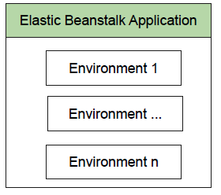

Elastic Beanstalk
what?
- 배포하기에 easy-to-use 그리고 scaling web applications and services
- 사용자는 업로드하면 EB가
capacity provisioning, load balancing, auto scaling, health monitoring 등의 모든 배포를 자동으로 관리
- 애플리케이션을 쉽게 배포할 수 있고 운영 및 관리를 지원하는 AWS 서비스
- application을 저장/실행하는 데 필요한 자원에 대한 비용만 지불하면 됨
장점
- fast and simple to begin
- AWS management console, Git repository, IDE (Visual
Studio, Eclipse, …)
- 수분 내에 application이 준비됨 - infrastructure나 resource
configuration을 하지 않아도 됨
- Developer productivity
- application을 실행하는 platform을 최신으로 유지시켜줌
- Complete resource control
- 최적의 resource를 user가 선택할 수 있음
특징
- EB는 auto-scaling, load-balancing 환경을 제공
- EB dashboard
- instance 추가/삭제를 위한 triggering rule 추가
- static file 캐싱을 위한 proxy server 선택
- application health monitoring 활성화
기초
- Application
- project의 folder: EB application 내에서 실행되지 않음
- Environment
- application의 서로 다른 실행 버전을 관리

- Environment tier
- Web Server tier : HTTP(S) request를 다룸
- Worker tier : background process를 다룸
- EB 사용 도구
- eb - Elastic Beanstalk CLI
- EB Architecture
- CNAME: environment에 대한 human-readable URL -> load
balancer
- load balancer: traffic을 multiple instance로 보냄
- auto scaling group: traffic을 처리할 instance를 선정하고
instance 개수 증가/감소 시킴

Serverless
What?
- 물리적 서버는 사용되며 개발자는 서버를 알 필요 없음
- 웹 애플리케이션 구축 역사
- 클라우드 시대 - 고정 개수 서버나 서버 공간 대여
- 서버리스 - 고정 대역폭이나 서버 개수를 유지하지 않아도 됨 -> 사용량에 따라 백엔드 서비스 비용 지불

- 운영상의 책임을 클라우드로 전환 -> 민첩성과 혁신을 높이는 클라우드의 네이티브 아키텍처
- 서버를 고려하지 않고 application과 server를 구축하고 실행
- 거의 모든 application, 백엔드 서비스 구축 가능
- 고가용성 실행/확장에 필요한 사항이 자동 처리 됨
Why?
- 민첩성, 낮은 비용으로 최신 application 개발
Serverless Platform
- serverless application 구축/실행을 위한 완전 관리형
- 백엔드 구성 요소 프로비저닝, 애플리케이션 내결함성/가용성에 대해 고려하지 않아도 됨
이점
- 빠른 개발: 복잡한 배포 과정, 버그 수정 대신 필요에
따라 코드 추가/수정
AWS Lambda
What?
- 서버를 프로비저닝하거나 관리하지 않고도 코드를 실행할 수 있게 해주는 컴퓨팅 서비스
- 모든 유형의 애플리케이션이나 백엔드 서비스에 대한 코드를 별도의 관리 없이 실행할 수 있습니다.
- 코드를 업로드하기만 하면, Lambda에서 높은 가용성으로 코드 실행 및 확장하는 데 필요한 모든 것을 처리
- 다른 AWS 서비스에서 코드를 자동으로 트리거하도록 설정하거나 웹 또는 모바일 앱에서 직접 코드를 호출
What to do
이점
Event 기반 실행 환경
- Event 예
- S3 bucket나 DynamoDB table의 데이터 변화
- Amazon API gateway를 이용한 HTTP 요청에 대한 응답
작동 방식

사용 사례 - 데이터 처리
(1) 실시간 파일 처리: Lambda, S3
- S3에 파일을 업로드 하는 즉시 데이터를 처리하도록 lambda 트리거
- 이미지 썸네일, 동영상 트랜스코딩, 파일 인덱싱, 로그 처리, 콘텐츠
검증, 데이터 수집/필터링, …

(2) 실시간 스트림 처리: Lambda, Kinesis
(3) 실시간 스트림 처리

(4) 추출, 변환, 로드
- DynamoDB 테이블의 모든 데이터 변경에 대한 데이터 검증, 필터링, 정렬 또는 기타 변환 작업을 수행하고 변환된 데이터를 다른 데이터 스토어로 로드
- Zillow: Lambda 및 Kinesis를 사용하여 실시간으로 모바일 지표의 하위 집합을 추적 ⇒ Lambda 및 Kinesis를 통해 2주 만에 비용 효과적인 솔루션을 개발 및 배포할 수 있었음

사용 사례 - 백엔드
- IOT 백엔드 : 웹, 모바일, 사물 인터넷 및 타사 API 요청

- 모바일 백엔드 : API 요청을 인증 및 처리하도록 백엔드 구성 → 개인화된 앱 환경을 손 쉽게 생성할 수 있음
- Bustle : AWS Lambda와 Amazon API Gateway를 사용하여 Bustle iOS 앱 및 웹 사이트에 대해 서버리스 백엔드를 실행

- 웹 애플리케이션
- 가용성 높은 구성에서 실행되는 강력한 웹 애플리케이션 구축 가능

참고
https://aws.amazon.com/ko/lambda/